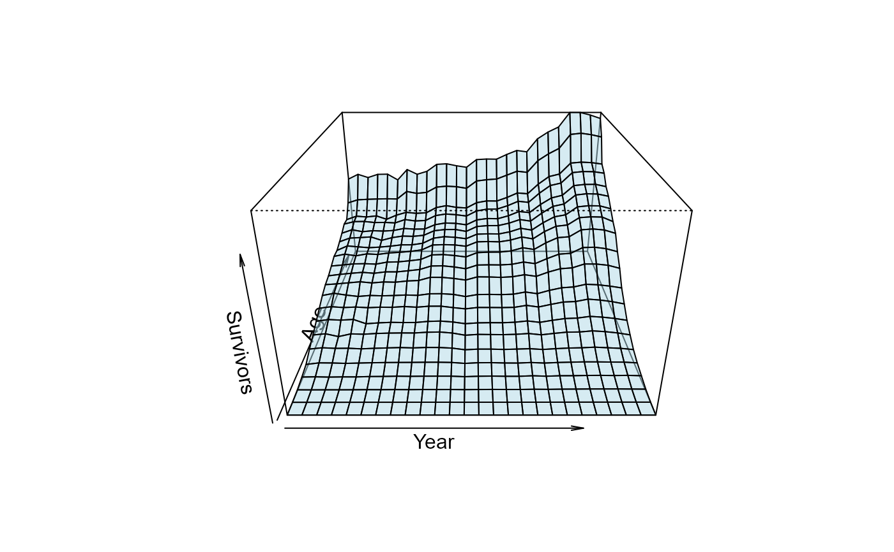
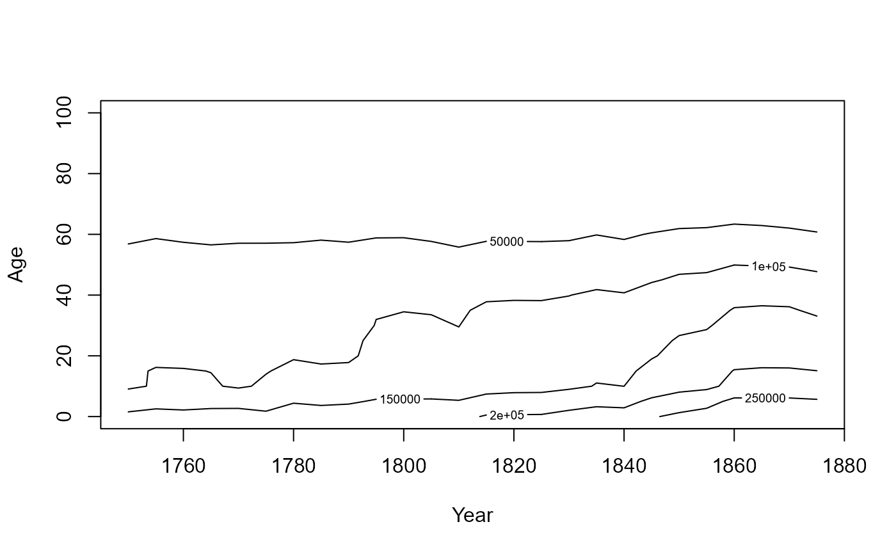

Data underlying Luigi Perozzo's (1880, 1881) "stereogram" – an early three-dimensional population pyramid – showing the number of survivors, by age, of Swedish birth cohorts followed forward through successive census years, 1750-1875. Friendly & Wainer (2021, Sec. 8.4) consider this the first true 3D statistical graphic, using an axionometric projection of a 3D surface.
Usage
data("Perozzo")Format
A data frame with 546 observations on the following 3 variables, forming a 26 (Year) x 21 (Age) grid.
Yearnumeric, census year, 1750-1875 in steps of 5
Agenumeric, age in years, 0-100 in steps of 5
Survivorsnumeric, number of survivors at that age in that census year
Source
This package's copy matches, byte-for-byte, porozzo-tidy.csv in RJ Andrews' old-charts
GitHub repo: https://github.com/infowetrust/old-charts/tree/main/src/components/PerozzoSweden/data
(see also https://charts.infowetrust.com/). That's the immediate source of this dataset, but
not the original digitization – old-charts doesn't document how those values were derived
from Perozzo's plate either (see Details). The original stereogram is held by Wikimedia
Commons:
https://commons.wikimedia.org/wiki/File:Stereogram_(three-dimensional_population_pyramid)_modeled_on_actual_data_(Swedish_census,_1750-1875).jpg
_modeled_on_actual_data_(Swedish_census,_1750-1875).jpg){kind=link}
Details
Perozzo's stereogram plotted Survivors as a surface over the Year x Age grid,
letting a viewer read off both cross-sections (the age distribution in a given census
year) and diagonal cohort lines (survivorship of a single birth cohort as it ages) from
one figure – widely cited as one of the earliest true 3D statistical graphics.
The immediate source of this tidy grid was traced 2026-08-07 to RJ Andrews' old-charts
GitHub repo (infowetrust/old-charts, component PerozzoSweden) – confirmed byte-identical
to that repo's porozzo-tidy.csv. That repo is itself a from-scratch React/D3-style redraw of
Perozzo's stereogram, built from this same grid; it documents no further provenance for the
numbers themselves, so how they were originally read off Perozzo's 1880/1881 plate is still
unknown. See issues/vignettes/verifying-perozzo.md for the full trace and for a methodology
to verify the grid against the original image directly.
Perozzo's 3D graphic was remarkable in its' time and still is today, for attention to detail in his
hand-drawn graphic. The simple image from graphics::persp show here is a very coarse approximation.
It remains a HistData challenge to do this (a) closer to Perozzo's graphic or (b) better in someway.
For example: Perozzo showed the trace lines for age receding into the image, with major lines for
year shown in red at 25 year intervals. The trace lines for year at fixed age were also highlighted
at 25 year intervals.
More importantly, for demography, he realized that diagonal lines for combinations of age and year
reflected a cohort and these could be used to compare the life survivorship of people born in
various years.
References
Friendly, M., & Wainer, H. (2021). A History of Data Visualization and Graphic Communication. Harvard University Press. https://doi.org/10.4159/9780674259034
Perozzo, L. (1880). Della Rappresentazione Graphica di una Collettivita di Individuinella Successione del Tempo. Annali di Statistica, 12, 1-16.
Perozzo, L. (1881). Stereogrammi Demografici – Seconda memoria dell'Ingegnere Luigi Perozzo. Annali di Statistica, 22, 1-20.
Examples
data(Perozzo)
str(Perozzo)
#> 'data.frame': 546 obs. of 3 variables:
#> $ Year : num 1750 1755 1760 1765 1770 ...
#> $ Age : num 0 0 0 0 0 0 0 0 0 0 ...
#> $ Survivors: num 163000 173012 166233 172982 173367 ...
# reshape to a Year x Age matrix for a surface / contour plot
Pmat <- xtabs(Survivors ~ Year + Age, data = Perozzo)
years <- as.numeric(rownames(Pmat))
ages <- as.numeric(colnames(Pmat))
# perspective plot: Year horizontal (1750 -> 1875, left to right), Age receding
# in depth (100 in front -> 0 at the back), as in Perozzo's original stereogram.
# persp() requires ascending x/y, so the front-to-back flip is done by negating
# and reversing Age (and matching the matrix columns to it), not by relabeling.
ages_rev <- -rev(ages)
Pmat_rev <- Pmat[, rev(seq_along(ages))]
persp(years, ages_rev, Pmat_rev,
xlab = "Year", ylab = "Age", zlab = "Survivors",
theta = 0, phi = 25, expand = 0.6,
col = adjustcolor("lightblue", alpha.f = 0.5), shade = 0.5)

# contour plot of the same surface
contour(years, ages, Pmat, xlab = "Year", ylab = "Age")

# extract the contour lines themselves, e.g. for further analysis or custom plotting
cl <- contourLines(years, ages, Pmat, levels = seq(20000, 280000, by = 20000))
length(cl)
#> [1] 16
str(cl[[1]])
#> List of 3
#> $ level: num 20000
#> $ x : num [1:32] 1750 1755 1760 1765 1770 ...
#> $ y : num [1:32] 73.5 75 73.6 74.4 73.9 ...